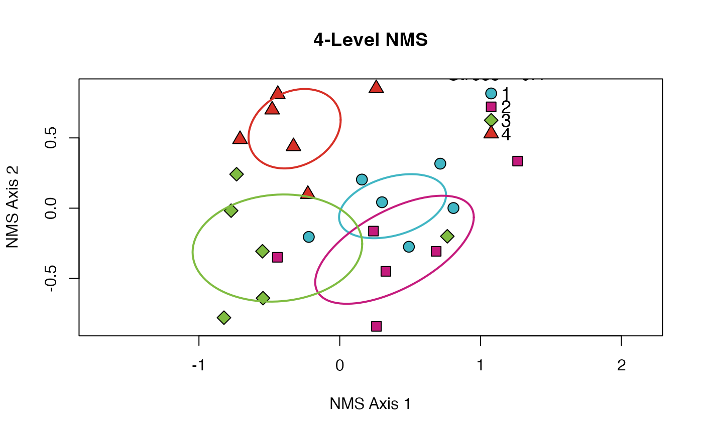

nms_ord.RdProduces Non-Metric Multi-dimensional Scaling (NMS) ordinations for up to 10 groups. Assigns a unique color for each group and draws an ellipse around the standard deviation of the points. Automatically adds stress (see `vegan::metaMDS` for explanation of "stress") as legend title. Because there are only five hollow shapes (see `?graphics::pch()`) all shapes are re-used a maximum of 2 times when more than 5 groups are supplied.
Object returned by `vegan::metaMDS`
(dataframe) column specification in the data that includes the groups (accepts either bracket or $ notation)
(character) string to use as title for plot
(character) vector of colors (as hexadecimal codes) of length >= group levels (default *not* colorblind safe because of need for 10 built-in unique colors)
(numeric) vector of shapes (as values accepted by `pch`) of length >= group levels
(numeric) vector of line types (as integers) of length >= group levels
(character or numeric) legend position, either numeric vector of x/y coordinates or shorthand accepted by `graphics::legend`
(character) vector of desired legend entries. Defaults to `unique` entries in `groupcol` argument (this argument provided in case syntax of legend contents should differ from data contents)
# Use data from the vegan package
utils::data("varespec", package = 'vegan')
resp <- varespec
# Make some columns of known number of groups
factor_2lvl <- c(rep.int("Trt1", (nrow(resp)/2)),
rep.int("Trt2", (nrow(resp)/2)))
factor_4lvl <- c(rep.int("Trt1", (nrow(resp)/4)),
rep.int("Trt2", (nrow(resp)/4)),
rep.int("Trt3", (nrow(resp)/4)),
rep.int("Trt4", (nrow(resp)/4)))
factor_6lvl = c(rep.int("Trt1", (nrow(resp)/6)),
rep.int("Trt2", (nrow(resp)/6)),
rep.int("Trt3", (nrow(resp)/6)),
rep.int("Trt4", (nrow(resp)/6)),
rep.int("Trt5", (nrow(resp)/6)),
rep.int("Trt6", (nrow(resp)/6)))
factor_over <- (1:nrow(resp))
# And combine them into a single data object
data <- cbind(factor_over, factor_2lvl, factor_4lvl, factor_6lvl, resp)
# Actually perform multidimensional scaling
mds <- vegan::metaMDS(data[-c(1:4)], autotransform = FALSE, expand = FALSE, k = 2, try = 100)
#> Run 0 stress 0.1000211
#> Run 1 stress 0.1000211
#> ... New best solution
#> ... Procrustes: rmse 1.239318e-06 max resid 5.34388e-06
#> ... Similar to previous best
#> Run 2 stress 0.1000211
#> ... Procrustes: rmse 1.4932e-05 max resid 6.459369e-05
#> ... Similar to previous best
#> Run 3 stress 0.1613105
#> Run 4 stress 0.1000211
#> ... New best solution
#> ... Procrustes: rmse 5.390423e-06 max resid 2.348347e-05
#> ... Similar to previous best
#> Run 5 stress 0.1000211
#> ... Procrustes: rmse 5.659898e-06 max resid 2.42021e-05
#> ... Similar to previous best
#> Run 6 stress 0.1000211
#> ... Procrustes: rmse 1.295602e-05 max resid 5.630996e-05
#> ... Similar to previous best
#> Run 7 stress 0.2246884
#> Run 8 stress 0.1000211
#> ... Procrustes: rmse 1.483601e-05 max resid 6.446624e-05
#> ... Similar to previous best
#> Run 9 stress 0.1000211
#> ... Procrustes: rmse 2.382393e-05 max resid 0.0001033368
#> ... Similar to previous best
#> Run 10 stress 0.1926906
#> Run 11 stress 0.1532704
#> Run 12 stress 0.1000211
#> ... Procrustes: rmse 4.094657e-06 max resid 1.776998e-05
#> ... Similar to previous best
#> Run 13 stress 0.1000211
#> ... Procrustes: rmse 3.699691e-05 max resid 0.0001607301
#> ... Similar to previous best
#> Run 14 stress 0.2132783
#> Run 15 stress 0.1000211
#> ... Procrustes: rmse 5.191336e-06 max resid 2.260464e-05
#> ... Similar to previous best
#> Run 16 stress 0.1000211
#> ... Procrustes: rmse 7.946329e-06 max resid 3.460428e-05
#> ... Similar to previous best
#> Run 17 stress 0.1715395
#> Run 18 stress 0.1000211
#> ... Procrustes: rmse 1.612805e-06 max resid 4.436907e-06
#> ... Similar to previous best
#> Run 19 stress 0.1000211
#> ... Procrustes: rmse 3.886285e-06 max resid 1.670734e-05
#> ... Similar to previous best
#> Run 20 stress 0.3628669
#> *** Best solution repeated 11 times
# With the scaled object and original dataframe we can use this function
helpR::nms_ord(mod = mds, groupcol = data$factor_4lvl,
title = '4-Level NMS', leg_pos = 'topright',
leg_cont = c('1', '2', '3', '4'))

# And too many groups results in an informative error
helpR::nms_ord(mod = mds, groupcol = data$factor_over)
#> Insufficient aesthetic values provided. 10 colors/shapes/lines are built into the function but you have supplied 24 groups. Please modify `colors`, `lines`, or `shapes` as needed to provide one value per category in your group column.